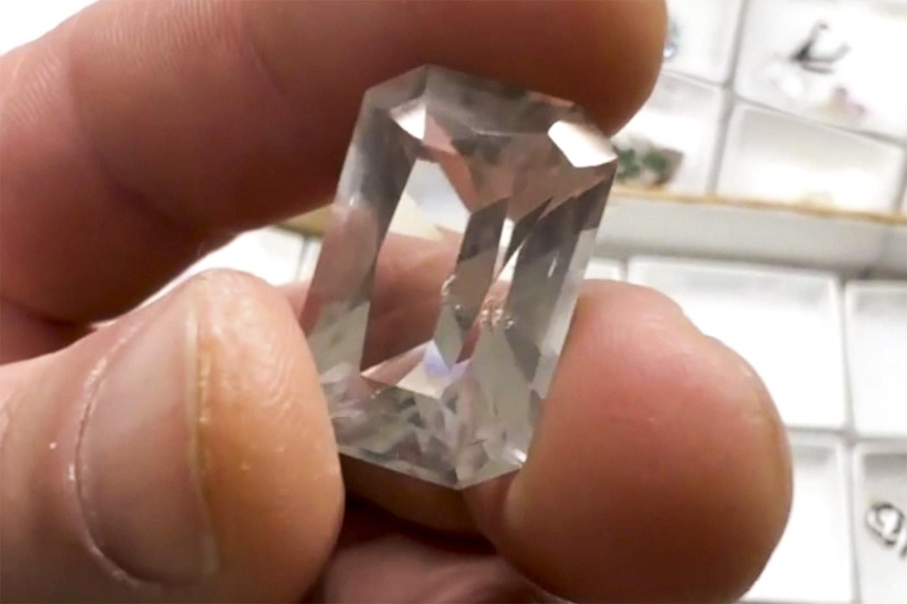

Quartz
"32.8 ct. Faceted Quartz"
VIII-10811
Skardu Area, Gilgit-Baltistan, Pakistan
Purchased 8/1/2026 from Dedication Minerals for $30.00
Core Collection • In Collection
Details
Storage Type: Drawer
Storage Location: C1D2 The Reserve Miniatures
Size class: Cabinet (0)
Dimensions: 2.5 × 1.6 × 1.3 cm
Mass: 6.55000019073486 g
Luster: Unrecorded